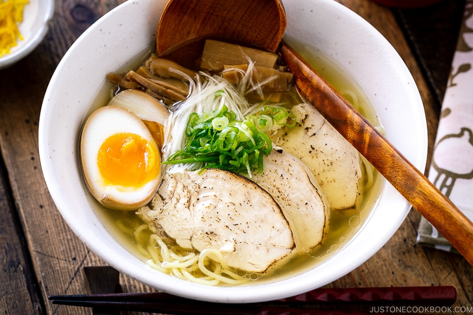

Shio Ramen

Shio Ramen (Salt-Flavored Ramen) is one of the most popular style of ramen in Japan!
It is a Japanese enigmatic classic that is soulful.
This is an authentic restaurant-quality ramen that can be enjoyed at home.
Ingredients
- For the dashi (Japanese soup stock) – kombu, dried shiitake mushrooms, dried anchovies, and dried bonito flakes.
- For the ramen broth – ground chicken, ginger, garlic, and Tokyo negi or green onions.
- For chicken chashu – boneless, skin-on chicken breast (use skin for aromatic oil).
- For shio tare – sake, mirin, soy sauce, fish sauce, salt.
- For aromatic oil – chicken skin (from the breast) and Tokyo negi.
- For ramen toppings of your choice – Ramen Eggs, menma (seasoned bamboo shoot), chopped scallions.
Cooking Steps
- Make cold brew dashi. (overnight, or at least 4 hours in advance)
- Make a quick but flavorful ramen broth. Cook ground chicken in the cold brew dashi. (40-50 minutes)
- Make chicken chashu. Cook chicken breast in salt-flavored water. (while making ramen soup)
- Make aromatic oil. Cook the chicken skin and green onions. (while making ramen soup)
- Make shio tare (the salt-flavored sauce). (while making ramen soup)
- Assemble shio ramen. Cook noodles, and assemble shio tare, soup, noodles, and toppings in a bowl. (20 minutes)